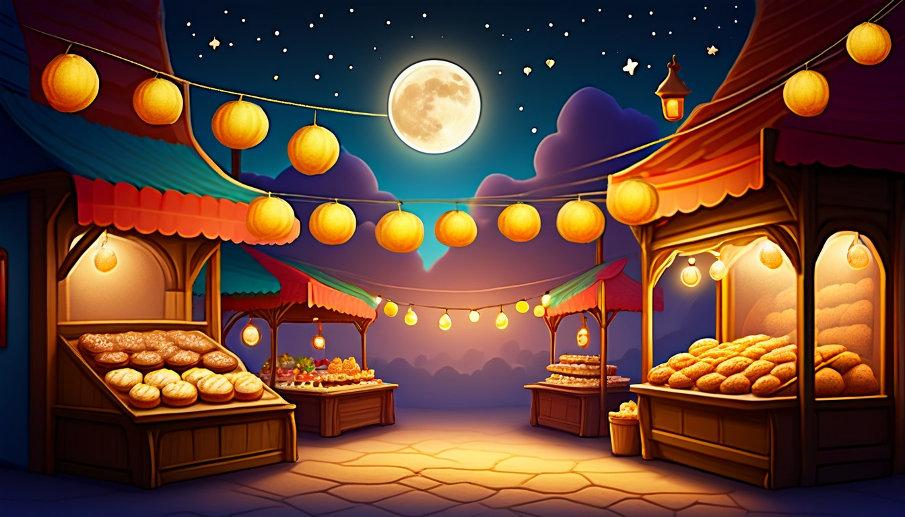

Sixteen paper cards help writers connect a pretend reading nook cause to a clear fictional result.
Audience: Families, homeschool groups, tutors, and adult-led writing tables for writers ages 7-11.
Format: 16 printable story cause-and-effect cards plus adult guide tools, cause/effect routines, take-home cause/effect slips, and optional share prompts
Family-safe printable writing pages for adult-led, offline story practice.
$41
Included
16 printable reading-nook cause-and-effect cards
Adult setup guide
Fictional cause/effect safety notes
Cause/effect coaching moves
Privacy and family handoff notes
Pack reset notes
Six adult-led cause/effect routines
Ten take-home cause/effect slips
Eight optional share prompts
Provider-ready PDF and ZIP artifact
Adult guide
Cause/effect move coaching
Before the session
Lay out paper cause cards, effect cards, blank cover shapes, cushion corner labels, and pencils before writers arrive.
Explain that every reading nook detail is pretend and paper-only, not a report about any real reading item or person.
Invite each writer to choose one cozy prop card, such as lamp glow, paper bookmark, or soft rug sketch.
Keep blank lines short so writers ages 7-11 can finish one clear cause and one result at a time.
Place extra because, so, and then arrow strips near the adult guide spot for quick help.
Paper cause/effect setup
Put cause cards on the left and effect cards on the right with a wide arrow lane between them.
Use one pretend page card as the shared story space for the group.
Add small paper tokens for cushion squeak, lamp glow, blanket fold, and paper bookmark.
Keep a discard stack for silly ideas that do not fit the current chain.
Give each writer one blank pair card so the adult can model cause first, effect second.
Story cause/effect coaching
Ask, What changed first, and what happened right after it?
Point to the paper arrow and have the writer say because before filling the line.
If the effect feels too broad, ask for one tiny visible result on the pretend page.
If a cause feels missing, offer two paper prop choices and let the writer pick one.
Read the pair aloud once and check that the effect could happen because of that cause.
Privacy and safety notes
Keep all work on paper and within the adult-led group.
Use pretend role labels when a label is needed.
Keep every blank cover shape invented, with no actual reading labels.
This paper pack keeps finished pages with the family adult.
Collect slips at the end only if families choose to keep them in the folder.
Family handoff
Send one slip with one clear blank line, not a long worksheet.
Tell families the card is for a short paper story talk led by an adult.
Invite the writer to explain the cause first, then the effect, using the paper arrow.
Ask adults to praise the link, not spelling or neatness.
Return any unused cards to the folder so the next table can use them.
Reset
Sort cause, effect, arrow, and prop cards into separate paper stacks.
Recycle torn blanks and keep clean blanks for the next group.
Clear adult examples if one was used; keep no writer details.
Put the reading nook labels back in the envelope with pencils and arrow strips.
Use one paper cause/effect card at a time. Keep every choice broad, invented, and screen-free.
World menu
Sixteen cause-and-effect-card worlds
Pick a world image, then connect one invented reading nook cause to one story effect.

Ages 6-8
Moon Muffin Market
Ages 6-8
Puddle Planet Post Office
Ages 7-9
Buttonwood Library Train
Ages 7-9
Button Bakery Map Mix-Up
Ages 7-8
Teacup Town Weather Window
Ages 7-9
Pocket Park Notice Board
Ages 7-9
Spoon Ferry Lunchbox Harbor
Ages 7-9
Acorn Avenue Errand Office
Ages 8-10
Seed Library Map Room
Ages 8-10
Rain Gauge Railway
Ages 8-10
Moss Message Observatory
Ages 8-10
Tidepool Timekeepers Lab
Ages 10-11
Revision River Ferry
Ages 10-11
Clue Label Tower Museum
Ages 10-11
Compass Craft Academy
Ages 10-11
Binding Day Boardwalk
Cause/effect routines
Choose the paper cause/effect rhythm
Lamp Glow Because Pair
Writers who need one simple cause and one direct effect.
Adult places a lamp glow card on the cause side.
Writer chooses one effect card that could happen on the pretend page.
Together, say the sentence with because and point across the arrow.
Writer copies the pair onto a blank cover shape and adds one cozy detail.
Cushion Corner So Chain
Small groups ready to link three paper events.
Place a cushion corner card, an arrow, and two blank effect cards in a row.
Adult fills the first cause with a tiny change, such as the cushion squeaks.
Each writer adds one so result that follows the card before it.
Read the chain once and remove any card that does not follow clearly.
Paper Bookmark Choice Turn
Character-choice cause practice without personal data.
Put two paper bookmark choice cards face up.
Writer picks one pretend character action, such as saving a page or moving a ribbon.
Adult asks what the action changes in the reading nook scene.
Writer writes the direct effect on the matching card.
Blank Cover Object Clue
Linking an object to a story result.
Adult shows one blank cover shape and three object cards.
Writer chooses the object that causes the clearest change.
Group names the effect in five words or fewer.
Writer draws an arrow from object to effect and reads it aloud.
Pretend Page Problem Path
Turning a mild paper problem into a clean result.
Place one pretend page problem card in the center.
Adult asks what caused the problem inside the fictional page.
Writer adds a paper cause card to the left.
Writer adds one result to the right that solves or changes the problem.
Soft Rug Reaction Link
Practicing how a character reacts after something happens.
Adult places a soft rug event card and a reaction card together.
Writer says what happened first using one clear cause.
Writer chooses a calm reaction effect that fits the event.
Adult helps turn both parts into one because sentence.
Take-home cause/effect slips
Finish one story cause-and-effect later
one-card slip | clear cause
Lamp Glow Cause Card
Choose one pretend reading nook change and write what caused it: ____________________.
Adult asks, What happened because of that cause: ____________________.
because slip | because statement
Cushion Because Line
Finish the sentence: The cushion corner changed because ____________________.
Adult reads the line aloud and asks for one matching effect: ____________________.
so slip | so result
Paper Bookmark So Result
Write a cause, then add so to show the result: ____________________.
Adult asks whether the result follows the cause: ____________________.
chain slip | cause-and-effect chain
Three Card Chain
Make a three-card chain with cause, effect, and next effect: ____________________.
Adult points to each arrow while the writer explains: ____________________.
effect arrow slip | direct effect
Lamp Arrow Match
Draw an arrow from a lamp glow cause to one direct effect: ____________________.
Adult asks the writer to say the arrow sentence: ____________________.
choice slip | character choice cause
Bookmark Choice Cause
Pick one pretend character choice in the nook and show what it changes: ____________________.
Adult asks why that choice caused the effect: ____________________.
setting slip | setting effect
Cozy Setting Effect
Use cushion corner, soft rug, or lamp glow as the setting cause: ____________________.
Adult asks what changes because the setting is that way: ____________________.
object slip | object cause
Object Makes It Happen
Choose paper bookmark, blank cover shape, or folded note as the object cause: ____________________.
Adult asks what the object makes happen on the pretend page: ____________________.
problem-result slip | problem cause
Tiny Problem Cause
Write a tiny paper problem and the cause behind it: ____________________.
Adult asks for one gentle result that follows: ____________________.
final result slip | final result
Final Result Link
Finish a cause-and-effect chain with the final result: ____________________.
Adult asks which first cause led to the ending: ____________________.
Optional share prompts
My clearest cause was ____________________.
The effect that followed was ____________________.
My because sentence is ____________________.
My so sentence is ____________________.
The reading nook prop that caused a change was ____________________.
The pretend page changed when ____________________.
One effect in my chain led to ____________________.
The final result of my cozy story chain was ____________________.
Cause-and-Effect Card 1 | Ages 6-8 | clear cause
Moon Muffin Tray Wobble
Moon Muffin Market
Adult setup: Place the paper card beside a pretend page, a paper bookmark, and one blank cover shape, then point to the moon muffin tray clue: ____________________.
Read the tiny market moment, choose the one clear cause, and write it in the lamp glow space: ____________________.
Cause prompt
What made the moon muffin tray wobble at the paper counter: ____________________.
Effect prompt
What happened right after the tray wobbled: ____________________.
Because prompt
Finish the sentence: The tray wobbled because ____________________.
So prompt
Finish the sentence: The tray wobbled, so ____________________.
Chain prompt
Link the first cause to the next tiny market event: ____________________.
Check back
Check back to the pretend page and circle the clue that proves your cause: ____________________.
Quiet option
Quiet option: whisper the cause to the adult leader, then write only the key words: ____________________.
Carry-away line: use the same moon muffin cause with a new paper-card effect: ____________________.
Cause-and-Effect Card 2 | Ages 6-8 | direct effect
Puddle Planet Envelope Plop
Puddle Planet Post Office
Adult setup: Set out the card with a pretend page, paper envelope shape, and lamp glow marker, then read the puddle clue aloud: ____________________.
Look at the cause on the paper card and write the direct effect that would happen next: ____________________.
Cause prompt
Cause: the puddle stamp slid off the envelope shape; add one detail that explains why: ____________________.
Effect prompt
What direct effect happens when the puddle stamp slides away: ____________________.
Because prompt
Finish the sentence: The stamp slid away because ____________________.
So prompt
Finish the sentence: The puddle stamp slid away, so ____________________.
Chain prompt
Make a short chain from stamp slip to envelope change: ____________________.
Check back
Check back to the paper clue and tell which effect matches it best: ____________________.
Quiet option
Quiet option: point to the direct effect first, then copy it into the blank: ____________________.
Carry-away line: draw a new envelope shape and give it one direct effect: ____________________.
Cause-and-Effect Card 3 | Ages 7-9 | because statement
Buttonwood Library Train Pause
Buttonwood Library Train
Adult setup: Place the card near a blank cover shape and a paper bookmark, then invite the writer to notice the train pause clue: ____________________.
Write a full because statement that connects the train pause to one invented cause: ____________________.
Cause prompt
What caused the Buttonwood Library Train to pause by the cushion shelf: ____________________.
Effect prompt
What changed in the quiet rail scene after the train paused: ____________________.
Because prompt
Finish the sentence: The Buttonwood Library Train paused because ____________________.
So prompt
Finish the sentence: The train paused, so ____________________.
Chain prompt
Add one more linked step after the pause: ____________________.
Check back
Check your because statement against the pretend page clue and fix one word if needed: ____________________.
Quiet option
Quiet option: say the because statement softly, then write the final version: ____________________.
Carry-away line: make another rail-scene because statement on a fresh paper card: ____________________.
Cause-and-Effect Card 4 | Ages 7-9 | so result
Button Bakery Paper Map Mixup
Button Bakery Map Mix-Up
Adult setup: Lay the card beside a pretend page and a tiny paper path map, then mark the button bakery mixup clue: ____________________.
Read the cause, then write the result that begins after the word so: ____________________.
Cause prompt
What caused the button bakery paper path map to turn the wrong way: ____________________.
Effect prompt
What changed at the paper counter after the map turned the wrong way: ____________________.
Because prompt
Finish the sentence: The path map turned the wrong way because ____________________.
So prompt
Finish the sentence: The path map turned the wrong way, so ____________________.
Chain prompt
Add one more result after your so sentence: ____________________.
Check back
Check back to the blank cover shape scene and underline the result clue: ____________________.
Quiet option
Quiet option: choose the so result from two adult-read choices, then write it: ____________________.
Carry-away line: reuse the paper path map with a new so result: ____________________.
Adult setup: Place the fictional notice board card beside a paper bookmark and blank cover shape, then model one cause leading to one effect: ____________________.
Write a cause, its effect, and the next effect so the pocket park chain makes sense: ____________________.
Cause prompt
What first cause appears on the pocket park notice board slip: ____________________.
Effect prompt
What effect happens right after that first cause: ____________________.
Because prompt
Finish the sentence: The pocket park changed because ____________________.
So prompt
Finish the sentence: The first notice slip changed, so ____________________.
Chain prompt
Build the chain: first cause, first effect, next effect: ____________________.
Check back
Check back to the pretend page and make sure each link follows from the one before it: ____________________.
Quiet option
Quiet option: tap each paper link in order before writing the chain: ____________________.
Carry-away line: fold a fresh paper card and make a new three-link chain: ____________________.
Cause-and-Effect Card 7 | Ages 7-9 | object cause
Spoon Ferry Lunchbox Harbor
Spoon Ferry Lunchbox Harbor
Adult setup: Place the paper card near a blank cover shape and ask the writer to choose one object for the spoon ferry to carry: ____________________.
Write what the object does first, then write the story effect that happens next in the pretend page scene: ____________________.
Cause prompt
Object cause: The spoon ferry's special cargo is ____________________.
Effect prompt
Effect: When that cargo tips, slides, or shines, the harbor changes by ____________________.
Because prompt
Because the object ____________________, the crumb dock crew decides to ____________________.
So prompt
So the ferry guide changes the crossing path by ____________________.